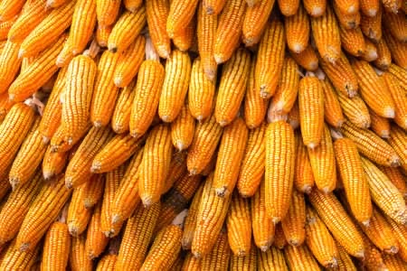

La Fédération des Unions des Producteurs de Maïs de la Haute Guinée (FUPROMA-HG) est une organisation faîtière de producteurs agricoles. Elle rassemble des unions et groupements de producteurs de maïs de la Haute Guinée afin de promouvoir une agriculture moderne, productive, résiliente et rentable.
La fédération œuvre au renforcement des capacités des producteurs, à l’amélioration de la production, de la transformation et de la commercialisation du maïs, ainsi qu’au développement socio-économique des communautés rurales.

Faire de la Haute Guinée un pôle de référence de la production et de la commercialisation durable du maïs, contribuant à la sécurité alimentaire, à la création d’emplois et à la réduction de la pauvreté.
Une gouvernance structurée pour une gestion transparente et efficace.
Organe suprême de décision
Orientation stratégique
Direction opérationnelle
Contrôle & transparence
Mise en œuvre & suivi
Production, suivi-évaluation, commercialisation, administration & finances
Une feuille de route claire pour accroître la production, structurer la filière et améliorer les revenus des producteurs.
Nos objectifs